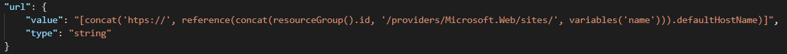
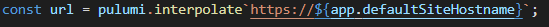
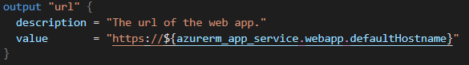
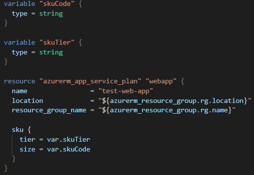
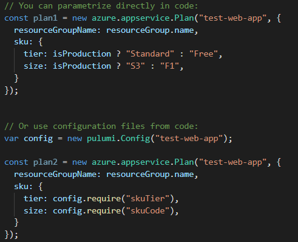

The power of using a general purpose programming language
since when became this

sexier than this

string concatentation
ARM
Terraform

pulumi
parameterization
Terraform

parameterization
pulumi

loops
ARM
"parameters": {
"org": {
"type": "array",
"defaultValue": [
"contoso",
"fabrikam",
"coho"
]
}
},
"resources": [
{
"name": "[concat('storage', parameters('org')[copyIndex()])]",
"copy": {
"name": "storagecopy",
"count": "[length(parameters('org'))]"
},
...
}
]
loops
Terraform
variable "user_names" {
description = "Create IAM users with these names"
type = list(string)
default = ["neo", "trinity", "morpheus"]
}
resource "aws_iam_user" "example" {
count = length(var.user_names)
name = var.user_names[count.index]
}
loops
pulumi
// Use array functions to map parameters to resources
const resourceGroups = ["euwest", "uscentral"]
.map(location => new azure.core.ResourceGroup(
`test-web-app-${location}`, { location }));
// Or use conventional loops
for(var i = 0; i < 10; i++){
resourceGroups.push(new azure.core.ResourceGroup(...);
}
conditionals
ARM
{
"condition": "[equals(parameters('production'), 'Yes')]",
"type": "Microsoft.Compute/availabilitySets",
// ...
}
conditionals
Terraform
variable "enable_autoscaling" {
description = "If set to true, enable auto scaling"
type = bool
}
resource "aws_autoscaling_schedule" "scale_out_business_hours" {
count = var.enable_autoscaling ? 1 : 0
// ...
}
conditionals
pulumi
if (pulumi.getStack() == "prod") {
const loadBalancer = new azure.lb.LoadBalancer("test-web-app-lb", ...)
}
reuse
ARM
* ARM files can be split up, but not in a feasible way
reuse
Terraform
- Split into separate files
- Allow files to be parametrized via input variables
reuse
pulumi
- Any refactoring that programming languages support:
- Extract methods
- Extract classes
- Extract separate files
- Package & distribute reusable components via npm
Bringing infrastructure & application code closer together
const iotHub = new azure.iot.IoTHub("test", { ... });
const storageAccount = new azure.storage.Account("storage", { ... });
const telemetryTable = new azure.storage.Table("telemetry", {
storageAccountName: storageAccount.name, ...
});
iotHub.onEvent("test", {
outputs: [telemetryTable.output("telemetry")],
// This callback could just as well be defined in a
// separate package and just be imported here
callback: async (context:any, message:any) => {
// Store telemetry to the configured table storage
bindings.telemetry = message.dataPoints
}
});
More examples can be found here